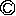

| 5分で落語のよみきかせ ふしぎなお話の巻 | |
| 小佐田定雄 | |
| PHP研究所 (2005) | |
５分で落語のよみきかせ ふしぎなお話の巻
小佐田定雄
【おとなのみなさんへ】
前作『５分で落語のよみきかせ』は、おかげさまでおおぜいの皆さんに読んでいただきました。お子さんやお孫さんに読んであげるだけでなく、お年寄りの介護をしておられる方にも読んでいただいているとうかがい、とても喜んでいます。
その第二弾として、ワクワク、ドキドキするふしぎなお話を集めてみました。今回は、古典落語だけでなく、新しい落語も入れてみました。
落語家になったつもりで読んであげてください。ことばは東京弁と大阪弁ですが、ご自分のお好きな言葉で読んでくださいね。
あるところに、とても元気な男の子が生まれました。お父さんとお母さんは、とても喜んで、この子にとてもしあわせな名前をつけようと思い、もの知りのおしょうさんに相談しました。すると、おしょうさんは、
「じゅげむじゅげむ、ごこうのすりきれん、かいじゃりすいぎょのすいぎょうまつ、うんぎょうまつ、ふうぎょうまつ、くうねるところにすむところ、やぶらこうじぶらこうじ、ぱいぽぱいぽ、ぱいぽのしゅーりんがん、しゅーりんがんのぐーりんだい、ぽんぽこぴーのぽんぽこなーのちょうきゅうめいのちょうすけ」
という長い長い名前をつけてくれました。お父さんとお母さんは大喜びです。この子が大きくなって、学校に行くことになりました。算数の時間に先生が、
「さあ、今日は足し算のテストですよ。時間は十分間です。名前を書くのを忘れないようにね。それでは、はじめーっ！」
みんなは自分の名前をササッと書いて、すぐに答えを書きはじめます。ところが、ひとりだけまだ名前を書いている子がいます。
「えーっと、じゅげむじゅげむ、ごこうのすりきれん、かいじゃりすいぎょのすいぎょうまつ、うんぎょうまつ、ふうぎょうまつ、くうねるところにすむところ、やぶらこうじぶらこうじ、ぱいぽぱいぽ、ぱいぽのしゅーりんがん、しゅーりんがんのぐーりんだい、ぽんぽこぴーのぽんぽこなーのちょうきゅうめいのちょうすけ。やったぁ！ 書けたぁ！ さあ、これから足し算をするぞ」
と喜んでいると、先生が、
「はーい。十分たちました。テストはここまででーす」
「えーっ。名前しか書いてないのに！」
かわいそうに、テストは〇点です。
こんなことがなんどもあったので、じゅげむ君は自分の長い名前がいやになりました。ある日、とうとう決心しておばあちゃんに相談しました。
「あのね、おばあちゃん。ぼく、自分の名前が長すぎて大きらいなんだ。ぼく、お父さんに言って、名前を短くしてもらおうと思うんだ」
「へーえ。どんなふうに短くするんだい？」
「うん。思いっきり短くして『じゅ』っていうのはどうだろう？」
「『じゅ』かい？ なんだか、お魚がこげてるみたいな名前だね」
「じゃあ『じゅげ』っていうのはどう？」
「『じゅげ』ねえ。悪くはないけど、なんだか変だねえ。おばあちゃんは、『じゅげむじゅげむ』って、二回くり返すところが好きなんだけどねえ」
「あ、そう。おばあちゃんが好きなんだったら、『じゅげむじゅげむ』にしよーっと」
おばあちゃんの家から帰る途中、八百屋さんの前で、友達のけんちゃんとみよちゃんに会いました。
「ぼく、名前を『じゅげむじゅげむ』にするんだ」
「ふーん。そりゃあいいけどさあ、ぼく、きみの名前の『ごこうのすりきれん』っていうとこが好きなんだけどなあ」
「あたしも、『かいじゃりすいぎょのすいぎょうまつ、うんぎょうまつ、ふうぎょうまつ』というところが好きだったのよ」
「あ、そう。だったら、ぼくの名前は『じゅげむじゅげむ、ごこうのすりきれん、かいじゃりすいぎょのすいぎょうまつ、うんぎょうまつ、ふうぎょうまつ』にしよーっと」
そばで聞いていた八百屋のおじさんとおばさんも、
「おじさんはなあ、『くうねるところにすむところ、やぶらこうじぶらこうじ』ってとこが調子がよくて好きだけどなあ」
「あら、それだったらあたしは『ぱいぽぱいぽ、ぱいぽのしゅーりんがん、しゅーりんがんのぐーりんだい、ぽんぽこぴーのぽんぽこなー』ってとこが、すっごくかっこいいと思ってんのよお」
じゅげむ君がうちにもどると、お母さんが、
「さっき、おばあちゃんから電話があったんだけど、名前を短くしたいんだって？ お母さんは、『ちょうきゅうめいのちょうすけ』っていうところが好きなんだけど」
そこで、じゅげむくんはお父さんに、
「お父さん。ぼくの名前を『じゅげむじゅげむ、ごこうのすりきれん、かいじゃりすいぎょのすいぎょうまつ、うんぎょうまつ、ふうぎょうまつ、くうねるところにすむところ、やぶらこうじぶらこうじ、ぱいぽぱいぽ、ぱいぽのしゅーりんがん、しゅーりんがんのぐーりんだい、ぽんぽこぴーのぽんぽこなーのちょうきゅうめいのちょうすけ』にしてくださいっ！」
とお願いしました。お父さんは、
「うん。それはいいけど...... もとの名前と、どこがちがうんだい？」
「うそつきはどろぼうのはじまり」という言葉を知っていますか？
「いつも、うそばっかりついていると、おしまいにはどろぼうをするようになるぞ」
という意味の言葉です。今日は、その「どろぼう」のお話をいたしましょう。
あるどろぼうが、貧乏な竹さんの家に入りました。
「やれやれ、それにしてもきたない家だなあ。それに、たんすも布団も、なーんにもないぞ。押し入れを開けてみよう。うわっ。洗たく物と紙くずばっかりだ。ぬすむものなんて、なんにもないじゃないか」
どろぼうがあきれていると、おもてのほうで、
「ああつかれた。今日は早く寝よう」
という男の人の声。
「しまった。ここに住んでいるやつが帰ってきたようだな。もう逃げ出すひまもないし。よしっ。この家のゆかの下にもぐりこんでかくれていよう」
どろぼうはゴソゴソとゆか下にもぐりこみました。そこへ帰ってきた竹さんは、
「あれれれ。おもての戸が開いているぞ。たたみの上にどろのついた足跡もついているし、押し入れもかきまわしたあとがある。ははーん。こりゃあどろぼうが入りやがったな。でも、ぬすむものがなかったんで、なにも取らずに帰りやがったんだな。ハハハハ。しかし、待てよ。どろぼうが入ったのはほんとうなんだから、大家さんに『どろぼうにお金を取られたので家賃がはらえません』って言って待ってもらおーっと」
そう決心すると、竹さんは大きな声で、
「大家さーん！ 大変ですよーっ！ どろぼうが入りましたよーっ！」
「どうした、竹さん。大きな声を出したりして。どろぼうが入ったんだって」
「そうなんですよ。大家さん。見てください。このとおり、全部取られてしまいました」
「ふーん。いったい、なにを取られたんだい？」
「まず、たまっているお家賃をはらおうと思って用意していたお金を取られました」
「そりゃあ大変だな。お金のほかに取られたものはないのか？」
「ほかも言っていいんですか？」
「いいも悪いも、取られたんだったら言わなきゃいけないよ」
「それだったら、寒いときに着る革のコートが二着、上等のスーツが五着、カシミアのセーターが八枚」
「セーターが八枚もあったのかい」
「ありましたよ。暑いときに着るサマースーツが三着、ポロシャツが五枚、アロハシャツが八枚」
「へーえ、アロハシャツが八枚も？ でも、いつも同じボロボロのＴシャツを着ているじゃないか」
「そりゃあ、ふだんはそんなもんですよ。よそへ出かけるときは、きちんとした身なりをするんです」
「ふーん。そんなもんかなあ」
「それから、くつも革ぐつが八足に、ブランドもののスニーカーが八足」
「おまえは足が何本あるんだい？ ずいぶんたくさん持っていたんだなあ」
「それから、大型のテレビが一台にＤＶＤが一台、冷蔵庫が一台に全自動の洗たく機が一台。パソコンが一台にダブルベッドが一台」
「ちょっと待ちなよ。こんなせまい家に、どうやってダブルベッドみたいな大きなものが入るんだい」
「それが、新発売の折りたたみ式のダブルベッドで、とても高いんです」
「ふーん。折りたたみ式かぁ」
竹さんがペラペラしゃべっているのを聞いたどろぼうは、なにも取っていないのに「取った」と言われたので、腹を立ててゆか下から飛び出してきました。そして、竹さんをつかまえると、
「やい！ おまえのとこにあったのは、よごれた洗たく物と紙くずだけじゃないか！」
「あ、あなた、よくごぞんじですけど、どちらさまです？」
「おれは、おまえの家に入ったどろぼうだ」
「えっ！ どろぼうさんですか。うわー、恥ずかしい」
「かくれて聞いていたら、大型テレビに折りたたみ式のダブルベッドだと。そんなもの、どこにあるんだ！ おまえぐらい、ひどいうそつきはないぞ」
そしてカンカンにおこったどろぼうはこう言いました。
「うそをつくなんて一番悪いことだ。 昔から言うじゃないか。『うそつきはどろぼうのはじまり』なんだぞ！」
あれれれれ、なんだかへんだな。
村はずれに大きな古い家がありました。りっぱなおやしきなんですが、だれも住んでいません。というのは、この家はようかいが住んでいる「ばけものやしき」なのです。人間が住もうとすると、ようかいたちが姿をあらわします。そのおそろしい姿を見ると、どんな人間でも、
「キャー。こわいーっ！」
とさけんで逃げて行ってしまいます。 ようかいたちは、それを見て、
「あっはっはっは。いい気味だ。おもしろい、おもしろい」
と喜んでいました。
そんなある日、ひとりのおじさんが、このばけものやしきにやってきました。さっそく、おじさんをおどかそうと、一つ目小僧があらわれました。
「だれだ。そこにいるのは？ 小僧さんかい。なにか用でもあるのかい？」
一つ目小僧は、ひょいと顔をあげると、おでこの真ん中にひとつだけある目玉をパチクリさせて、舌をベローッと出して、
「ベロベロベロ。おーばーけーだーぞーお」
「なんだ、一つ目小僧か。舌を出すなんてぎょうぎの悪いことをしちゃあいけないぞ！ 出てきたんだったら、なにかお手伝いをしなさい。そうだ。わしがごはんを食べたお茶わんやお皿がそのままになっているから、台所へ持って行ってきれいに洗いなさい。...... なにをぼんやりしてるんだ。早くしないかっ！ ああ、泣くんじゃないよ。ちゃんとお手伝いをしたら、しかったりしないから。そうそう。ちゃんと洗うんだよ。洗ったら、ふきんでちゃんとふいておくれよ。皿洗いがすんだら、こっちへ来て、おじさんのかたをたたいておくれ。そうそう。なかなかじょうずだな。かたたたきが終わったら、部屋のおそうじをしておくれ。それから、庭の草むしりをして、植木に水をやって...... 」
つぎつぎ用事を言いつけられるので、一つ目小僧は、おどろいて仲間のところへ逃げて帰ってきました。
「助けてください。あいつ、ちっともこわがらないんですよ」
「ようし。そんなら、次はわしが行ってやろう」
と言って立ち上がったのは大入道。背の高さが三メートルもある大男で、目玉が三つもあるおそろしいようかいです。おじさんの前にあらわれると、
「おーばーけーだーぞー」
「なんだ。こんどは大きいやつが出てきたな。こりゃあちょうどいいや。おい。おまえ。背が高いから、うちの屋根の上を見ることができるだろう。屋根に草が生えているだろう。それを抜いてくれるかい。それが終わったら、裏のへいがたおれかかっているのを起こしておくれ。それから、庭にある石を持ち上げて動かしておくれ。それがすんだら...... 」
大入道も、あわてて仲間のところに逃げてきました。
「だめだ、だめだ。おいらが行っても『キャー。こわい』と言っておどろかねえや」
それを聞いたのが「のっぺらぼう」のおねえさん。「のっぺらぼう」というのは、顔に目も鼻も口もないようかいです。
「だらしがないねえ。いいよ。あたしに任せておきな。必ず、おじさんに『キャー、こわい』って言わせてみせるからね」
のっぺらぼうが、おじさんの前にあらわれました。
「こーんーばーんーわーあ」
「はいはい。こんどはだれだい？ おやおや、女の人だね。うつむいていたら顔がわからないよ。顔をあげて見せてごらん」
「はーいー。こんな顔でーす」
「なんだ。さいしょの小ぼうずが一つ目で、次の大男が三つ目で、こんどはなんにもなしかい。まあいいや。さっそく、用事をしてもらおう。おまえさん、ぬい物はできるかい。だったら、着物のほころびをぬってもらおう。それが終わったら洗たくをしてもらって、それが終わったらお買い物に行ってもらって、それがすんだら...... 」
のっぺらぼうもおどろいて逃げて帰りました。
ばけものたちは相談して、その次の日の夜、おじさんの前に全員が並んでお願いすることにしました。
「おじさん。お願いですから、わたしたちに用事をさせるのはやめてください。わたしたちようかいは、人間に『キャー、こわい！』と言ってこわがってもらうのが生きがいなんです。どうぞ少しはこわがってくださいよ」
おじさんは平気な顔で、
「ふん。なにを言ってるんだ。おまえたちなんか、ちっともこわくないよーだ。そんなことはどうでもいい。この家はわしの家なんだから、おまえたちは全員、わしの召し使いと同じことだ。これから毎日、ビシビシ用事を言いつけてやるからかくごしろよ！」
こう言われてようかいたち、声をそろえて、
「キャー、こわいーっ！」
道具屋のおじさんが、めずらしいお皿や、お茶わんをさがすために、いなかの村にやってきました。あちらこちら、一日中歩きまわったおじさんは、つかれたので、茶店で休けいすることにしました。茶店では、おじいさんがひとりで店番をしています。
「おじいさん。おじゃましますよ。お茶とお団子をください」
「はいはい。少々お待ちくださいませ」
「ああつかれた。今日はよく歩いたなあ。おやおや、あんなところでねこがごはんを食べてるよ。おいしそうに食べてるなあ。...... あれれれ。あの、ねこがごはんを食べているお茶わんだけど、あれ、ひょっとしたら『絵高麗梅鉢の茶わん』という、すごく値段の高いお茶わんじゃないかな？ ああ、ほんものだ。何百万円もするお茶わんで、ねこにごはんを食べさせてるよ。おじいさん、なにも知らないんだな。よーし。うまくだまして、このお茶わんを持っていってやろう」
考えているところへ、おじいさんがお茶とお団子をおぼんにのせて持ってきてくれました。
「ごゆっくりどうぞ」
「ありがとう。いただきますよ。それはそうと、かわいいねこちゃんだねえ」
「はいはい。うちのおばあさんが好きで飼っております」
「ああそうかい。じつは、わたしもねこが大好きでね。ねこちゃん、こっちへおいで。よしよしよし」
「ああ、毛がぬけますので、だいたりしないほうがよろしゅうございますよ」
「いやいや、わたしはねこが大好きだって言ってるだろう。ははは。のどの下をなでてやると、ゴロゴロゴロゴロいって喜んでるよ。かわいいなあ」
「へーえ。うちのねこは、めったによその人にはなつかないのに、好きな人はわかるんでございますねえ」
「じつは、うちにもこのねこと同じ毛なみのねこがいたんだけど、死んでしまってねえ。どうだろう。このねこ、もらうわけにはいかないだろうか」
「いやあ、これはうちのばあさんが飼っているねこですので、わたしが勝手にさしあげたりしたら、あとでわたしがしかられます。ばあさんがもどってくるまで、待っていただけたら」
「そんなこと言わないでくださいよ。そうだ。こうしましょう。ここに、一万円ありますから、このお金で売ってもらえませんか」
「いやいや、このねこは拾ってきたねこでございますから、一万円もいただいたらもうしわけございませんので」
「いいからいいから。どうぞ受け取ってください。お願いします」
「そこまで言われたらお断りすることができませんよ。わかりました。じゃあ、一万円でお売りいたしますんで、どうぞかわいがってやってくださいよ。これ、ミケや。おまえはしあわせものだねえ。かわいがってもらうんだよ。ははははは。ねこもうれしそうにゴロゴロいっておりますよ」
「いやあ、よかったよかった。じゃあ、このねこはいただいていきますよ。でも、これから店に帰るまでのあいだ、宿屋にとまったりしなくちゃいけないんだ。宿屋さんでねこにエサをやるときに使ういれものがほしいんだけど...... 。あ、そうだ。その茶わんも、ついでにもらっていっていいだろう」
「え？ ああ、この茶わんでございますか。それだったら、こっちに新しい茶わんがありますんで、こちらを持っていってくださいな」
「いやいや、新しいのでなくっていいんだ。ねこは、いつも使っている茶わんでないとエサを食べないと言うじゃないか。この、いま使っていた茶わんでいいよ」
「それより、あちこち持ってお行きになるんでしたら、こっちの割れないプラスチックの茶わんのほうがいいんじゃないですか」
「いや、そんなものでなくていいんだよ。いま食べていた、このきたない茶わんでいいんだから」
「いやあ、その茶わんはさしあげることができませんので」
「どうしてだい？」
「実は、その茶わん、『絵高麗梅鉢の茶わん』といいましてな、何百万円もの値打ちがある茶わんですのじゃ」
「えーっ。知ってたのかい。だったら、そんな値打ちのある茶わんで、どうしてねこにエサを食べさせたりしていたんだい？」
「ハハハハハ。それがね、このお茶わんでねこにエサをやっていますとね、ちょいちょいねこが一万円で売れるんですよ」
道具屋の佐兵衛さんが、殿様のおやしきにやってきました。家来の三太夫さんが出てきて、
「おお。佐兵衛ではないか。なにかおもしろい品物を持ってきたか？」
「はい。今日はとてもめずらしいものを持ってまいりました」
「ほほお。どのようなものじゃな」
「はい。これでございます」
佐兵衛さんがふろしきの中から取り出したのは、古い「つづみ」でした。「つづみ」というのは、小さな太鼓のようなもので、かたにかついで手でポンとたたいて音を出す楽器です。佐兵衛さんはこう言いました。
「これはただのつづみではございません。『初音のつづみ』という品物で、これにはきつねの皮がはってあるのです。ですから、このつづみをポンとたたくと、そばにいる人がコンときつねの鳴き声を出すんです」
「ほほお。これはめずらしいな。その話はほんとうか？」
「いえ、うそでございます」
「なんじゃ。うそだと？ そのようなものを持ってきてもしようがないではないか！」
「しばらく、しばらく。ねえ、三太夫さま。このうそをほんとうにして、お金もうけをいたしませんか」
「なに。それはどういう意味じゃ」
「わたくしが、殿様の前で、このつづみをポンとうちますから、三太夫さまはそばにいて、コンと一声お鳴きください。そうすれば、お殿様はふしぎなつづみだと思ってお買い上げくださいます。三太夫さまにも、お礼として一回鳴いていただいたら、鳴き代に一両さしあげますので」
「なに、一両くれるじゃと？ 無礼者！ わしが殿をだまして、お金もうけをすると思っているのか！」
「ははーっ。失礼いたしました」
「一度だけならやってもよいぞ」
「ああびっくりした。ではよろしくお願いします」
佐兵衛さんは三太夫さんにつれられて、殿様の前にやってきました。
「殿様。今日はとてもめずらしいつづみを持ってまいりました」
「ほほお。古そうなつづみじゃな」
「はい。これは『初音のつづみ』というもので、きつねの皮がはってあるのです。ですからこのつづみをポンとたたくと、そばにいる人がコンと鳴くのでございます」
「それはおもしろい。さっそく、ここでたたいてみよ」
「ははっ。かしこまりました」
佐兵衛さんがつづみをポンとたたくと、三太夫さんが「コン」。
つづみがポン。三太夫さんがコン。
ポン、コン、ポン、コン、ポン、コンコン。
ポン、コン、ポン、コン、ポン、コンコン。
お殿様は大喜びです。
「あーっはっはっは。これはおもしろい。三太夫がコンと鳴きおった。これ、三太夫。そのほう、いま、コンと鳴いたな」
「え？ いやいや、せっしゃはそのようなおぼえはございませんが」
「うーむ。こりゃおもしろい。これ、佐兵衛。そのつづみをわしにかせ」
お殿様がつづみをポン。三太夫さんがコン。つづみがポン。三太夫さんがコン。
ポン、コン、ポン、コン、ポン、コンコン。
ポン、コン、ポン、コン、ポン、コンコン。
お殿様は、またまた大喜び。
「あーっはっはっは。こりゃおもしろい。これこれ、三太夫。もうさがってよいぞ」
三太夫さんは、くたくたにくたびれて自分の部屋へ帰っていきました。
殿様の前に残ったのは、佐兵衛さんだけになりました。殿様は、
「佐兵衛。このつづみ、そちがうってみよ」
「ええっ！ わ、わたしがでございますか？」
「いかにも。三太夫がコンと鳴いたつづみじゃ。そちがうって、わしがコンと鳴いたら百両で買ってとらそう。さあうってみよ」
殿様の命令ですから断るわけにいきません。佐兵衛さんは、目をつぶってつづみをポンとたたくと、殿様がコン。おどろいた佐兵衛さんが、もう一度ポンとたたくと、殿様がコン。
ポン、コン、ポン、コン、ポン、コンコン。
ポン、コン、ポン、コン、ポン、コンコン。
殿様は、
「おお、これこそまことの『初音のつづみ』じゃ。百両で買ってつかわすぞ。これ、お金を佐兵衛にわたしてやれ」
佐兵衛さんが、お金を受け取ると、たった五両しかありません。
「あの、お殿様。百両で買っていただけるんじゃないんですか？」
「あっはっはっは。佐兵衛。三太夫とわしの鳴き代が引いてある」
なーんだ。お殿様は、みんな知っていたんですね。
あるところに、貧乏だけどとても絵のじょうずな熊さんという人がいました。あんまり貧乏なので、たんすやテレビを買うことができません。でも、熊さんはとてもいいことを思いつきました。
「そうだ。部屋のかべに白い紙をはって、その紙にほしいものの絵をかいて、たんすやテレビがあるつもりで暮らしたらいいんだ。よーし。かくぞお」
熊さんは自分の部屋のかべに白い紙をはると、絵の具と筆を取り出して絵をかきはじめました。
「よーし。まずは大きなたんすをかいておこう。ペタペタペタ。さて、こっちのすみには大型テレビをかこうかな。サラサラサラ。ここの柱にはハト時計をかいておこう。チョイチョイチョイ。こちらには冷蔵庫をかこう。サッサッサ。このすみには戸だなをかいて、そうそう。戸だなの中にはお皿にのったケーキをかいておこう。こっちはどうしようかなあ。そうだ。ちょっとごうかに、映画で見た外国のおやしきみたいな、だんろでもかいてみようかなあ。シュッシュッシューッと。かけたかけた。となると、だんろの上にはシカの頭だけのはく製をかいて、そのとなりにはシカをしとめた鉄ぽうもかいておこう。これでいいや。なんだか、お金持ちのおやしきみたいになったぞ。いろんなものがあるつもりで暮らすのも悪くないな。今日はもう寝よーっと」
熊さんは絵をかきおわると、お布団に入って寝てしまいました。
その日の夜中のことです。ひとりのあわてもののどろぼうがやってきました。熊さんの家にしのびこむと、
「あれれれれ。こいつはすごい家だぞ。たんすも立派なのがあるし、テレビも大きいのがあるぞ。おっ。ここにだれか寝ているぞ。よくねているなあ。よーし、目をさまさないうちに、ぜーんぶ持っていってやろう。まずはこのテレビからいただこうか」
テレビに手をかけようとすると、スルリ。
「ありゃりゃ。手がすべってしまうぞ。おかしいな」
どろぼうは、となりにあるたんすを見て、
「テレビはあとにして、こっちのたんすにしよう。引き出しを開けて...... 」
と手をかけようとすると、またスルリ。
「あれれ、また手がすべってしまうぞ。どうなってるんだろう」
台所の戸だなを見て、
「おっ。あんなところにおいしそうなケーキがあるじゃないか。おなかもすいているし、ちょいといただこう」
と手をのばして取ろうとすると、指をグキッ。
「いてててて。突き指しちゃったよ。これ、どうなってるんだい」
どろぼうは、顔をかべにぐーっと近づけると、
「えーっ！ これ、全部絵の具でかいてあるのかい？ なるほど。絵にかいて、あるつもりで暮らしているんだな。おもしろいやつだなあ。よーし、こいつがあるつもりで暮らしているんだったら、おれもぬすんだつもりになって帰ってやろうじゃないか」
どろぼうは、部屋のまん中に立つと、
「ぬすんだ品物を包むためのふろしきをパーッと広げたつもり。まずはテレビをふろしきに入れたつもり。そして、たんすの中から上等の服をいっぱい取り出してふろしきに入れたつもり。戸だなの中からケーキを取り出して、ケーキもふろしきに入れたつもり」
と、つもりになってしゃべっていました。と、この声で寝ていた熊さんが目をさまして、
「あ、あ、あーっ。よく寝たなあ。ありゃ。だれかが部屋の中で、ブツブツ言ってるぞ。なに？『ケーキをふろしきに入れたつもり』？ ははーん。こいつ、どろぼうだな。おれが『あるつもり』で暮らしているから、こいつは『ぬすんだつもり』になっているのか。ふーん。おもしろいやつだなあ。しかし、いくら『つもり』でも、おれのものを持って帰られるのはおもしろくないな。よーし」
熊さんは布団から飛び起きると、
「ぱっと飛び起きて、だんろのそばにおいてある鉄ぽうを取り上げたつもり」
と言って鉄ぽうを持つまねをしました。そして、
「どろぼうをねらって、ズドーンとうったつもり」
と言うと、どろぼうは、
「たまが当たって、『ウワーッ』と死んだつもり」
目を回してひっくりかえってしまいました。
そこまで「つもり」にならなくてもいいのにね。
「さあて、お立合い。ご用とお急ぎのない方はゆっくりと聞いていらっしゃい。さて、手前持ちいだしたるは軍中膏蛋仙草は四六のガマじゃ。『そんなガマなら、おれのところの縁の下や台所にいくらでもおる』と言う方があるかもしれんが、それは『お玉がえる』、『ひきがえる』というて、薬のききめはない。持ちいだしたるは四六のガマ。四六、五六はどこで見分ける。前足の指が四本。後足の指が六本ある。これを名づけて『四六のガマ』。このガマのおるところは、これよりはーるか北にあたって、江州伊吹山のふもとにおいて、車前子、おんばこという露草を食ろう。このガマのあぶらをとるには、上下四方、鏡張りの囲いの中にガマを追いこむ。ろうそくを一本立てて火を点ずれば、ガマは鏡に映れるおのれの姿にうちおどろき、総身よりタラーリ、タラリとあぶら汗を流す。このあぶら汗が鏡のおもてにこびりついたのを、ヘラにてこきおとし、つげの小枝をもって、三七、二十一日の間、トローリトロリとたいて煮つめたのがこのガマのあぶらじゃ。赤いのが蜃砂で野州のあぶら、テレメンテイカにマンテイカ、効能は切りきずに突ききず、かすりきず。ヒビやアカギレなんぞは、いかに大きく口を開けたればとて、ガマのあぶらをとってひとぬりするときは、あとかたもわからぬように治ってしまう。まちごうて上のくちびると下のくちびるへぬってみなさい。口がピタッとふさがって、茶漬けは鼻のあなから流さねばならんぞ、お立合い。
ガマのあぶらの効能は、そればかりではない。第一に刃物を切れなくする。持ちいだしたるは家に伝わる名刀。抜けば玉散る氷の刃。お目の前において白紙を切ってごらんにいれる。一枚の紙が二枚。二枚の紙が四枚。四枚が八枚。八枚が十六枚。十六枚が三十二枚。三十二枚が六十四枚。六十四枚が百と二十八枚。ふっと散らせば、春は三月落花のかたち。このとおり切れる刀じゃが、ガマのあぶらをひとつけするときにおいては、白紙一枚がたやすく切れない。みどもの腕をもって試してごらんにいれる」
おじさんは、自分の腕にガマのあぶらをぬると、刀で切ってみせながら、
「どうじゃ。引いて切れない、たたいて切れない」
こんどは、いまぬったばかりのガマのあぶらを手ぬぐいでふき取って、刀でちょっと切ると腕から血が出てきます。おじさんは少しもあわてずに、
「ガマのあぶらをふき取るときは、ちょっと刀でさわっただけで、これこのとおり切れる。これくらいのきずはなんでもない。血をふき取ったあとへ、ガマのあぶらをつければ痛みがなくなって、血がぴたりと止まる。どうじゃ。このガマのあぶら。いつもはひとつが十二文じゃが、今日は特別に二つで十二文じゃ。さあ買わんか、買わんか。はいはい。ありがとうありがとう」
と、おじさんはガマのあぶらをたくさん売りました。
お金がもうかったので、おじさんは、
「ちょっと一ぱいだけお酒を飲もうかな」
と、近くのお店でお酒を飲みました。一ぱいだけにしようと思っていたのですが、あんまりお酒がおいしかったので、どんどんどんどん飲んでしまい、とうとうむちゃくちゃによっぱらってしまいました。
そして、またもとの場所にもどってきて、ガマのあぶら売りをはじめました。でも、こんどはよっぱらっているので、うまくいきません。
「さ、さあ、ご、ご用とお急ぎの方はゆっくりと聞いておいで。こ、こ、ここに持ちいだしたるは、四六のガマじゃ。四六、五六はどこでわかる。ま、前足の指が六本...... じゃないや、四本だったかな。まあ、どっちでもいいや。ウイーッ。このガマのおるところは、江州の...... どこだったかな。なんとかいう山のおくにすんでおる。このガマのあぶらの効能は、刃物を切れなくする。持ちいだしたるは家に伝わる名刀。抜けば玉散る氷の刃。この刀にガマのあぶらをひとつけすると、刀が切れなくなるぞ」
おじさん、自分の腕を刀で切って、
「ひ、引いて切れない、たたいて切れない。どうじゃ」
ところが、こんどは腕が切れて血がポタポタポタ。
「うわーっ！ き、き、切れたぞお立合い。こんなときには、ガマのあぶらをぬると...... このように血が...... 止まらない。うわーん。痛いよーお！ どうしよう！」
おじさん、べそをかいて、
「みなさんの中に、きず薬をお持ちの人はおられませんか」
遠いところに旅行に行っていた徳さんは、山の中で道に迷ってしまいました。と、森の中から人間の、
「助けてくれーっ」
という悲鳴と、ガサガサとなにやら大きいものが動く音がします。こわごわようすを見に行ってみると、「うわばみ」という大きなへびが、旅人をつかまえて、飲みこもうとしているところでした。旅人は、必死で逃げようとするのですが、とうとうゴクリと飲みこまれてしまいました。いくら大きなうわばみでも、人間をひとり飲みこんだんですから、おなかがはちきれそうにふくらんでいます。苦しくなったうわばみは、ごそごそとはって谷におりていきました。そして、谷底に生えていた赤い草をぺろぺろとなめました。すると、ふしぎなことにうわばみのおなかがみるみる小さくなって、楽になったうわばみはどこかに行ってしまいました。このようすを見ていた徳さんは、
「ははーん。あの赤い草は、食べすぎの薬になるんだな。よおし。持って帰って、薬だと言って売ってやろう」
と、その赤い草をつんで、持って帰ることにしました。
徳さんが町に帰ってくると、町ではお祭りのまっさいちゅう。
「さあ、大食いの競争だよ。ここにあるおもちを、十個食べることができた人には、十両さしあげます。さあ、だれかいないか！」
徳さんは
「へーえ。十両もくれるのか。でも、大きいおもちだなあ。ぜんぶ食べられるかなあ。ためしにやってみよう」
徳さんは、決心すると、
「おーい。おれが食べるぞーお」
「あなたが食べるんですか」
「そうです。いまからこの大きなおもちを十個食べるから、十両用意しておいてくださいよ」
「はいはい、わかりました。それでは、まずひとーつ」
「むしゃむしゃむしゃ。はい、ごちそうさま」
「おっ。もう、ひとつ食べましたか。こりゃあ、はやいなあ。では、ふたーつ」
「むしゃむしゃむしゃ。ごちそうさま」
「また食べた。それ、みっつ」
「むしゃむしゃむしゃ。ごちそうさま」
「おやおや。はやいな。それよっつ」
「むしゃむしゃむしゃ。ごちそうさま」
「すごいなすごいな。それいつつ」
「むしゃむしゃむしゃ。ごちそうさま」
「やれくえ、それくえ。それむっつ」
「むしゃむしゃむしゃ。ひとやすみ。それでも食べるぞ、ごちそうさま」
「こいつはすごいや、それななつ」
「むしゃむしゃむしゃ。しんどいな。それでもがんばれ、ごちそうさま」
「ほんとにすごいや、それやっつ」
「ふーふーふーふー。ちょっと待て。むしゃむしゃ。休んで。むしゃむしゃむしゃ。やっと食べたぞ、ごちそうさま」
「すごいぞすごいぞ、それここのつ」
「ふーふーふーふー。ああしんど。それでも食べるぞ、むしゃむしゃむしゃ。やっと食べたぞ、ごちそうさま」
「残りはひとつだ。あとひとつ」
ところが、徳さん、九つ食べたところで、ほんとにおなかがいっぱいになってしまったのです。
「もうだめだ...... もうだめだ...... 」
「もうだめですか？ あと、たったひとつなんですよ。食べられませんかねえ。残念ですねえ」
「あのー、どこかでひと休みさせてもらえませんか？」
「いいですよ。でも、ちょっとのあいだだけですよ。それじゃあ、こちらの部屋で休んでください。また呼びにきますから」
案内してくれた人が行ってしまうと、部屋の中には徳さんひとりです。
「あーあ。もうひとつだったのになあ。なんとか急におなかがへる工夫はないものかなあ」
そこで、徳さんは、うわばみのなめていた赤い草のことを思い出しました。
「そうだそうだ。うわばみが人間を飲みこんで、おなかがいっぱいで苦しくなったとき、赤い草をなめたら、うわばみのおなかがみるみる小さくなったぞ。あの草を持ってきてたんだっけ。よーし。これをなめて、おなかをからっぽにして、残ったおもちをペロリと食べて、お金をもらおーっと」
徳さん、荷物の中から赤い草を取り出すと、ペロペロペロペロなめはじめました。
ところが、この赤い草は「蛇含草」といって、人間をとかすききめのある草だったのです。
徳さんが、いつまでたっても部屋から出てこないので、部屋の中をのぞいてみると、徳さんの体はすっかりとけてしまって、おもちが着物を着てすわっていました。
あるところに、とてもけちな「けちべえさん」というおじさんがいました。けちべえさんの家のおとなりはうなぎ屋さんです。毎日、うなぎを焼くとてもいいにおいが流れてくると、家族のみんなに、
「さあさあ、みんな、うなぎのにおいがしてきたから、ごはんにしましょう。いいかい、おかずはおつけものと、このうなぎのにおいだけだよ。しっかり食べなさいよ」
つまり、においだけかいで、うなぎを食べたつもりになっているわけですね。
毎日、においだけでごはんを食べていたところ、ある日、おとなりのうなぎ屋さんがやってきて、
「えー、まいどありがとうございます」
「『まいどありがとう』？ うちは、うなぎを注文したことはありませんよ」
「ええ。ご注文は一度もしていただいたことはございませんけど、毎日、うなぎを焼くときのいいにおいをかいでいただいていますよね」
「なるほど。それはそうかもしれない。それで、なにか用かい？」
「えー、お金をはらっていただこうと思いまして」
「ちょっとお待ちよ。さっきも言っただろう。うちではうなぎは注文していないんだよ」
「わかっております。でも、うちでうなぎのいいにおいを流しているのは、店の前を通っているお客さまに、そのにおいをかいで店の中に入ってきてもらうためなんでございます。それをおたくでかいでしまわれたら困ります。うなぎのにおいのかぎ代として五百円をはらってください」
「うーん。なるほど。においをかいだのはまちがいないしなあ...... 。よしっ。わかりました。はらいましょう」
と言うと、けちべえさんは財布の中から百円玉を五つ取り出すと、机の上にチャラチャラチャラとぶちまけました。うなぎ屋さんが喜んで、
「まいどありがとうございます」
と受け取ろうとすると、けちべえさんはパッとお金を取り上げて、
「においのお金なんだから、音だけでいいだろう」
＊
そんなことがあった三日後、けちべえさんは息子のけちじろうさんに、
「おいおい、けちじろう。かべに、このあいだもらった絵をかけようと思うんだ。絵をかけるクギを打つから、おとなりのうなぎ屋さんで、かなづちを借りてきておくれ」
「はい。行ってきます」
しばらくすると、けちじろうさんが帰ってきました。
「おとなりへ行って『かなづちを貸してください』とたのんだら、『クギを打ったら、かなづちが減りますから、お貸しできません』と言って断られました」
それを聞いたけちべえさんは、
「はてさて、あきれはてたケチなやつだ。もういい、もういい。そんなやつに借りることはない。うちにあるかなづちを出して使いなさい」
どっちがケチなんでしょうね。
＊
そのまた三日後のこと。けちべえさんとけちじろうさんが、川のそばを歩いていました。すると、石にけつまずいてけちべえさんがドボーンと川の中におっこちてしまいました。けちべえさんは泳ぎを知りませんから、あっぷあっぷしながら、
「助けてくれーえ」
けちじろうさんも泳げないので、通りかかったよその人に、
「すいません。うちのおやじがおぼれかけているんです。助けてやってください」
「わかったよ。助けてあげたら、いくらくれる？」
「えーっ！ お金がいるんですかあ？」
「そりゃそうだよ。こんなきたない川に飛びこむんだから、ただではいやだよ。いくらか出しな」
「そんなあ。おやじはもう、しずみかけているんですよ」
「だから助けてやらないとは言ってないじゃないか。いくら出すんだよ」
「うーん。じゃあ、二千円！」
「ちょっと待てよ。人の命を助けるんだぜ。もっと出しなよ」
「うーん。だったら、二千五百円」
「ちょっとずつ上げるなよ。五千円出しなよ」
「うーん。だったら三千円」
「おいおい、値切るのか。けちなやつだな。おやじさん、おぼれかけてるんだろ。五千円出しな、五千円」
けちじろうさんが、どうしようかと迷っていると、川の中のけちべえさんが、
「三千円よりたくさん出すんじゃないぞ。そんなにお金を出すぐらいなら、わしはおぼれたほうがましだ。ブクブクブク」
けちべえさん、とうとうほんとにおぼれてしまいました。
なかよしの喜六さんと清八さんが旅に出ました。喜六さんが、道ばたで拾った小石を草むらにぽーんと投げたところ、その小石が草むらで昼寝をしていたきつねの頭にコーンと当たりました。
きつねは目をさますと、頭にできたたんこぶをさすりながら、
「あイタタタタ。おのれ、にくい旅人め。どうするか、いまにみておれ」
と言うと姿を消してしまいました。
そんなことはちっとも知らない喜六さんと清八さんは、のんきに旅をつづけていましたが、とつぜん目の前に、見たこともないような大きな川があらわれました。清八さんは、
「前に来たときには、こんな大きい川はなかったはずやけどなあ。きっと、大雨が降って急にできた川やろ。はだかになって歩いてわたろうやないか。わしが前を歩くさかい、おまえはうしろから、『深いか浅いか』とたずねながらついておいで」
「よっしゃ。わかった」
と、ふたりははだかになり、荷物や着物は頭の上にのせて、
「ふかーいか、あさいか」
「あさーいぞ、あさいぞ」
「ふかーいか、あさいか」
「あさーいぞ、あさいぞ」
と言いながら川をわたりはじめました。
このようすを見ていたのが近所のおひゃくしょうさんです。
「おい、見てみろよ。旅人がふたり、はだかになって麦畑の中を歩き回っとるぞ」
「ほんまじゃな。あらあ、きつねにだまされとんねやろ。教えてやろうか。これ、しっかりしなされ！」
おひゃくしょうさんたちに声をかけられて、喜六さんと清八さんは目をパチクリ。はだかになって、麦畑の中を歩き回っていたんですからね。
おひゃくしょうさんが言うには、
「このあたりには、一度ひどいめにあったら、七へんだましてしかえしする『しちどぎつね』という悪いきつねが住んでおるんじゃ。そのきつねのしわざにちがいない。気をつけて行きなされ」
「そうですか。ありがとうございます」
ふたりはおひゃくしょうさんにお礼を言うと、あわてて着物を着て、旅をつづけました。
すると、いつのまにか山の中に迷いこんでしまい、あたりも急に暗くなってしまいました。と、向こうのほうに明かりがひとつ見えました。行ってみると、小さなお寺です。ふたりは、
「すんません。旅の者ですねんけど、道に迷って困っています。今晩、とめてもらえまへんやろか」
お寺のおくから出てきたのは、尼さん...... 女のお坊さんです。
「はいはい。それはお困りのことでしょう。どうぞお入りください。とまっていただくのはよろしいんですけど、村の人にお金を貸していたおばあさんが死んだという知らせがありましたんで、わたし、これからお通夜に行かなくてはなりません。どうぞおふたりで、おるすばんをお願いしたいんでございます。それでは、よろしくお願いいたします。行ってきます」
尼さんは、こわがっているふたりをおいて出かけてしまいました。尼さんと入れちがいにやってきたのが村の人たちで、
「お通夜をしてましてんけど、おばあさんのゆうれいがかんおけから飛び出してきて『金返せ』と言って困ります。お寺であずかってもらおと思うて、かんおけを持ってきました。ほな、よろしく」
と、おばあさんの入ったかんおけを置いて行ってしまいました。
真夜中になると、おそろしい風がビューッ、ビューッ、ゴーッ、ゴーッとふいてきます。と、おばあさんの入ったかんおけのふたが、ミシミシッ、ミシミシッ...... 。ポーンとふたが飛ぶと、かんおけの中からおそろしい顔をしたおばあさんのゆうれいが、
「うーらーめーしーやーあ」
「うわーっ！ た、た、助けてくれーっ！」
「金返せーえ。金返せーえ」
「わたしら、お金を借りた者ではございません。旅の者でございます」
「旅の者なら、歌をうたえ」
「いやや、いやや。歌なんかうたえません」
「うたわなかったら、そこへ行ってほっぺたをなめるぞおー」
「うわーっ！ うたいます、うたいます。♪ やーとこせーよーいやな」
こちらはさっきのおひゃくしょうさん。
「おい、見てみろよ。さっきの旅人、こんどはおじぞうさんの前で、歌をうとうとるぞ」
また、だまされたんですね。七度だまされるということは、いったいあと、なんかいだまされるんでしょうか？
繁八さんが大川に魚つりに行きました。なかなかつれないので帰ろうとしていると、ずしっと大きなものがかかりました。喜んでひきあげてみると、お魚ではなくて、人間のしゃりこうべ...... 頭の骨だったのです。おどろいた繁八さんは、すぐにしゃりこうべをお寺へ持って行って、おしょうさんにありがたいお経をあげてもらったあと、自分の家に持って帰りました。その日の夜中のこと。繁八さんの家の戸をトントンとたたく音がします。
「はい。どなたです。こんな夜おそくに」
戸を開けると、若い女の人が入ってきて、
「今日、大川でお目にかかった者でございます」
「今日、大川で？ はてなあ、女の人とは会わなかったと思うがなあ。どちらさまですか？」
「あのー、ゆうでございます」
「おゆうさんですか？ 知らないなあ」
「あのー、れいでございます」
「おれいさんですか？ よその家とまちがえてるんじゃないですか？」
「あのー、『ゆう』と『れい』」
「はいはい。『ゆう』と『れい』...... 『ゆうれい』...... 。うわーっ！ ご、ご、ご、ごめんなさい！ この骨は、あなたのでしたか。明日、すぐに大川まで返しに行きますから、ばちをあてるのはやめてください」
「いいえ、わたしはばちをあてにきたのではございません。お礼にまいりました。わたくしは、大川でおぼれて死んだのでございますが、大川の底にしずんだままになっておりました。今日、あなたがつりあげてくださり、お寺でありがたいお経まであげてくださいました。ほんとうにありがとうございます」
「ああそうでしたか。それはよかった。でも、あなた、きれいな人ですねえ」
「まあ、おはずかしい。あのー、お願いがあるんですけど、わたしをおよめさんにしてくれませんか？」
「えーっ！ ほ、ほ、ほんとですか。あなたみたいなきれいな人がおよめさんになってくれるだなんて、うれしいな。どうぞよろしくお願いします」
とうとう、ゆうれいをおよめさんにしてしまいました。
繁八さんのとなりに住んでいるのが喜六さんという人。この人もおよめさんがいません。このようすをとなりからのぞいていて、
「そうか。魚つりに行ってしゃりこうべをつりあげたら、あんなきれいなおよめさんがもらえるんだな。よし。おれも、大川に魚つりに行こう」
喜六さんも、つりざおをかついで大川へやってきました。でも、いつまでたってもしゃりこうべはつれません。あきらめて帰ろうとすると、岸のところの砂がもりあがっています。「なんだろう」と思ってほりおこしてみると、これが待ちに待ったしゃりこうべ。
「あった、あった。こんなとこにあったんだ。昨日はつりばりにひっかかってあがってきたけど、今日は岸で待ってたんだな。ありがたい、ありがたい」
喜六さんは大急ぎでお寺へやってくると、おしょうさんにありがたいお経をあげてもらい、しゃりこうべを持って自分の家へ帰ってきました。
「さあ、これで、あとはおよめさんが来るのを待つばかりだぞ。およめさんが来たら、どうしよう。毎日いっしょにごはんを食べて、毎日いっしょに買い物に行って、毎日いっしょにあそびに行こーっと」
喜六さんが、わくわくしながら待っていると、その日の真夜中。喜六さんの家の戸をドンドンとたたいて、
「開門！ かーいもーん！」
と大きな男の人の声。
「な、なんだい。およめさんの声とは大ちがいだぞ。あのー、どちらさまですか？」
「大川からまいった」
「なんだかこわそうな声だな。あのー、どうぞお入りください」
「しからば、ごめん」
のっしのっしと入ってきたのは、ひげを生やしたこわい顔のおさむらいさん。
「あ、あんた、どちらさんです？」
「わしは大昔の強い強いさむらいじゃ。昔のいくさで命を落とし、大川の底にしずんでいたが、しゃりこうべだけが岸にうちあげられていたのじゃ。それをひろいあげて、ありがたいお経まであげてくれてかたじけない。お礼に参ったぞ。どんな強い敵があらわれても、わしがやっつけてやるから安心しろ」
「そんな強い敵なんて、わたしにはいませんよ。あーあ、きれいでやさしいおよめさんがほしかったのになあ」
「おお。やさしくてきれいなおよめさんがほしいのは、わしも同じことだ。よしよし、心配するな」
「えっ。およめさんを世話してくれますか？」
「いやいや、明日からわしも、おまえといっしょにしゃりこうべをつりに行こう」
いつもけんかばかりしている夫婦がいました。
「なんだよ！ たまに仕事から早く帰ってきたのに、まだごはんができてないなんて、どういうことだよ！」
「なに言ってんのよ！ いつもはよっぱらって、夜おそくにしか帰ってこないくせに、たまに早く帰ったからって、そんなにえらそうに言うことないじゃないの！ ばんごはんがいるんだったら、会社を出るときに電話してちょうだいよ！」
「そんなめんどうなことができるかよ！ 夕方になったら、ごはんをたくのがあたりまえだろう！ どうせ、おまえはおやつにケーキやおせんべいを食べたりしてるから、おなかがすいてないんだろう。だから、ごはんをたくのを忘れるんだ」
「忘れたんじゃないわよ。いま、たこうと思ってたとこじゃないの」
「いいや、おやつばっかり食べてるから、ごはんをたくのがおそくなるんだ。おまえ、このごろ、食べすぎて太ったんじゃないか」
「まあ、失礼ねえ！ くやしーっ！」
「痛い痛い！ なにをしやがる！」
またけんかがはじまりました。このさわぎを聞いていたのが、おとなりに住んでいた発明家の博士でした。博士は、
「これこれ、二人ともけんかはやめなさい。わしがいいものを貸してあげよう。これさえあれば、もうけんかはしないようになるよ」
博士が貸してくれたのは、大きなふくろでした。
「このふくろは『かんにんぶくろ』といって、腹の立ったとき、怒りたいときに、相手に言いたいことをこのふくろの中に大きな声で言ったら、胸がスーッとするんだ。相手に言うとけんかになるけど、ふくろに言ったらけんかにならないだろう。やってみなさい」
最初にだんなさんがふくろに口を当てると大きな声で、
「いつもいつも、ダイエットをするって言ってるくせに、テレビを見ながらおやつをバリバリ食べやがって。毎日、体重計にのって、『あら、この体重計こわれてるわ』なんて、よく言うよ！ 体重計のせいにするなーっ！」
言い終わったらニッコリ笑って、
「ああ、ほんとに胸がスーッとした」
こんどは奥さんがふくろを口に当てると、
「毎晩毎晩おそくまでお酒を飲んでばかりいるくせに、たまに早く帰ってきたからって、えらそうに言うなーっ！ せっかく温かいおかずをこしらえてあげても、テレビの野球が終わるまで食べないもんだから、冷めちゃうじゃないのよーっ！ あとかたづけするのはわたしなんだから、さっさと食べろーっ！」
言い終わったらニッコリ笑って、
「ああ、ほんとに胸がスーッとしたわ」
それから、ふたりはとても仲の良い夫婦になりました。
その話を聞いて、いろんな人が「かんにんぶくろ」を借りにきました。
野球ファンのお父さんに腹を立てたお向かいのお母さんは、
「好きなチームが負けたからって、プンプン怒らないでよーっ！ あたしには関係ないじゃないのよーっ！ 野球なんか大っきらいよーっ！」
お母さんに腹を立てたお兄さんは、
「いつもいつも、『勉強しろ』ばっかり言うなーっ！ 勉強しようと思ってるときに『勉強しろ』なんて言われたら、やる気がなくなるぞーっ！」
おじいさんに腹を立てたおばあさんは、
「お昼ごはんを食べおわったすぐあとに、『今日のばんごはんはなんだ？』なんて聞かないでくださいよ。せわしないじゃないですか。食べることしか楽しみはないんですかーっ！ この、くいしんぼう！」
犬のポチに腹を立てたねこのミケは、
「なによ。わたしが歩いてたらワンワンワンワンほえたりして。いくらえらそうにしてたって、へいの上まではのぼってこれないでしょう。やーい！」
みんながどんどんどんどん腹の立つことをふくろの中につめこんだので、とうとう「かんにんぶくろ」はパンパンにふくらんでしまいました。
そこにやってきたのが、白いひげを生やした見たことのないおじいさんでした。
「すまないが、わたしにも『かんにんぶくろ』を貸してくれないかい」
「いいですけど、おじいさんはどなたです？」
「わしは、そこの神社の神様じゃ」
「か、か、神様？ 神様も腹を立てることはあるんですか？」
「たまにはな。貸してくれるかい」
「いいですよ。どうぞ」
神様は「かんにんぶくろ」に口を当てると、
「五円や十円のおさいせんで、勝手なお願いをいっぱいするんじゃないーっ！」
すると、ふくろのそこがベリベリベリと破れて、いままでみんながふくろの中に入れた声が、
「大っきらいよーっ！ うるさーい！ だまれーっ！ わあわあわあわあわあ！」
飛び出してしまいました。
飛行機のなかった、むかしむかしのお話です。旅が好きな太兵衛さんは、一度外国に行きたいと思いました。
太兵衛さんは港へ行って、外国の大きな船にしのびこみました。やがて船は出発。何日か走ったあと、どこかの浜辺に着きました。太兵衛さんは船の中にかくれていたので、そのあいだずーっと、おしっこをがまんしていました。
「もうがまんができないぞ。船からおりて、おしっこをしてきてやろう」
太兵衛さんはそーっと船からおりると、浜辺の岩のかげでおしっこをしはじめました。
ジャジャージャージャージャー、ジョンジョロリン、ジョンジョロリン。
すると、いままで乗っていた船がとつぜん動き出しました。おどろいた太兵衛さんはおしっこをやめようとしましたが、いっぱいたまっていたおしっこは ジャジャージャージャージャー、ジョンジョロリン、ジョンジョロリン。
「うわー、おしっこが止まらないや。おーい、その船ーっ！ 待ってくれーっ！」
とさけんだのですが、船はどんどんどんどん行ってしまいました。
「さあ、困ったぞ。ここはいったいどこなんだろうな。それに、たまっていたおしっこを全部出してしまったら、急におなかがすいちゃった。なにか食べるものはないかなあ。あ、こんなところにコンブが落ちているぞ。これでも食べようか」
砂浜に落ちていたコンブを拾って食べようとすると、コンブの下から、
「これこれ。うちの屋根を持っていったらいかんじゃないか」
おどろいて声のしたほうを見ると、小さい小さい豆つぶほどのおばあさんが、太兵衛さんを見上げてプンプン怒っています。
「うわっ！ 小さい人だなあ。このコンブが、おたくの屋根なんですか。知らなかったものですから、どうもすいません。あのー、ここはなんというところなんでしょうか？」
「ここかな。ここは小人国というて、小さい人間の住んでいる国じゃ。で、あんたはどこから来たのじゃ？」
「わたしは日本から参りました」
「日本とは、また遠いとこから来たもんじゃな。あんた、おなかがすいてなさるのか」
「はい。ペコペコです」
「それなら、ごはんを食べなさるか」
「はい。いただきます」
「ごはんは何つぶほど食べなさる？」
「何つぶ？」
「わしらは、ごはんひとつぶあったら、三日はもちますでな。もっとたくさん食べ物がほしかったら、この森のおくのおくへ行ってみなされ。大きな野菜や果物がなっていますでな」
「そうですか。じゃあ、行ってみます」
太兵衛さんは森のおくへおくへ入って行きました。すると、ドッドッドッドッという水の音が聞こえてきました。
「うわあ。大きな滝だなあ。すごく高いところから水が落ちてきているぞ。上のほうは雲にかくれて見えないや。でも、この滝、変なにおいがするなあ」
と、雲の上から大きな声が聞こえてきました。
「おーい、そんなとこに立ってると、わしのおしっこがかかるぞお」
「うわあ。こんどは大きな人だなあ。変なにおいがすると思ったら、この水はおしっこですか。ここは、なんていうところですか？」
「ここは大人国じゃ」
「あのー、わたし、とてもおなかがすいているんですけど、なにか食べるものをいただけませんでしょうか？」
「それなら、うちへ来い。今晩のおかずはくじらの丸焼きじゃ。何匹食べる？」
「そ、そんなもの、何頭も食べられませんよ」
「えんりょはせんでもええぞ」
「いえいえ、えんりょはしていませんよ」
「おい、おまえさん。ちょっと向こうへ行きなされ」
「どうしてですか？」
「おならが出るんで、あぶないから向こうにはなれておきなされと言うんじゃ」
「そんなあ。おならぐらい平気ですよ」
「ほんまにかまわんのか。そんなら、一発やるから、なにかにつかまっていろよ。それーっ。ブリブリブリ、ブーッ！」
と、太兵衛さんの体はおならに飛ばされてビューッ。ドスーンと地面についらくしました。
「いてててて」
「なんや。人間が降ってくるやなんて、けったいなお天気やな。大丈夫か？」
「あのー、ここはどこの国でしょうか？」
「ここは日本でっせ」
「ああ、日本に帰ってきたんだ。ああ、よかった。で、日本のどこですか？」
「奈良ですわ」
「えっ。ああ、おならで飛ばされたから奈良に着いたんだ」
夜おそく、おもての戸をトントンとたたく音がするので、開けてみると、そこにはたぬきが立っていました。
「なんだ。おまえは」
「昼間、人間につかまって、もう少しでたぬき汁にされるところを助けていただいたこだぬきでございます。ありがとうございました。なにか、恩返しをさせていただきたいので、なんでもおっしゃってください」
「うーん。たぬきに助けてもらうこともないんだがなあ。そうだ。おまえたちは、なんにでも化けることができるらしいが、それはほんとかい？」
「ええ。なんにでも...... というわけにはいきませんが、知ってるもんだったら」
「そうかそうか。それだったら、おまえ、お金に化けることはできないか？」
「お金ですか？ どんなお金に化けりゃあいいんでしょうか？」
「そうだな。できたら一万円札に化けてもらえたら最高なんだがな。今日、酒屋さんが集金に来るんだ。ずいぶん待ってもらっているが、一万円あったら全部はらってしまえるんだけどなあ」
「それはいいですけど、わたしが化けるんですから、いつまでもお札のままではいられませんよ」
「それは好きなようにしなよ。おれが酒屋さんにわたすときだけ一万円札に化けていてくれたらいいんだから」
「わかりました。じゃあ、いつ化けましょう」
「酒屋さんは、もうじき来るんだ。急いで化けておくれ」
「はい。じゃあ、いまから化けますんで、よく見ててくださいね。ええいっ！ ポーン！」
すると、こだぬきの姿は消えて、一万円札が一枚。
「おやおやおや。ほんとに化けたのかい？ うまく化けたなあ。こりゃあ、ほんものと見分けはつかない...... と言いたいけれど、お札にかいてある『福沢諭吉』の顔にひげが生えているじゃないか。いくら、たぬきのお札といっても、ひげが生えていたらいけないな。ひげはひっこめておくれ。で、裏返してみると...... 。おいおい、お札の裏側に毛が生えているじゃあないか。ちゃんと、裏表ともすべすべのお札にしておくれ。よしよし、これでほんものそっくりのお札になったぞ。しかし、裏も表も、よくできているなあ」
「あ、あの、すいません。あんまり、くるくる回さないでください。目が回りますから」
「ああそうかい。お札が目を回しちゃあいけないね。じゃあ、財布の中にしまっておくから、しばらくおとなしくしておいておくれよ。ふたつに折ってと」
「キュッ！」
「ど、どうしたんだい。いま、変な声がしたけれど」
「はい。体を二つに折り曲げられたもんで、苦しくて声が出たんです」
「苦しくても、ちょっとのあいだだけだからしんぼうしておくれよ」
「あのー」
「なんだい？」
「おしっこがしたいんですけど」
「そのくらいしんぼうしろよ。ああ、だめだ。酒屋さんが来たよ。もうしゃべっちゃあいけないよ」
「どーも。酒屋でございます。お勘定をいただきにまいりました」
「ああ、酒屋さんかい。待っていたよ。いくらだったかな？」
「はい。まいどありがとうございます。全部で八千六百円になります」
「そうかい。はい一万円。待ってもらったお礼に、おつりはいらないよ」
「えっ！ どうもありがとうございます。じゃあ、えんりょなくいただきます。今後とも、どうぞごひいきに」
酒屋さんは大喜びで帰っていきました。
しばらくすると、こだぬきがあわてて帰ってきました。
「ただいま！ ああ、こわかった」
「おう。たぬきか。どうした？」
「ひどいめにあいましたよ。あれからおもてへ出ると、酒屋のおじさんは『あの人の家に一万円札があるなんてめずらしいことだ。にせ札じゃああるまいか』なんて言って、日にすかしたり、ひっぱったりするんですよ。そして、四つに折りたたんで小さながまぐちの中に入れたもんだから、苦しくて苦しくて。おしっこもがまんできなくなったんで、がまぐちの底をかみ破って逃げてきました」
「そうか。そりゃあ、ご苦労だったな。なにか持っているのか？」
「はい。がまぐちから逃げ出すときに、いっしょに入っていた千円札をお土産に持ってきました。どうぞ」
お父さん、お母さんの財布の中の一万円札も、ほんとはたぬきだったりして？
留五郎さんは、困ったことがあると、
「ああ、いやだいやだ。いっそ死んでしまいたいよ」
と言うのが口ぐせでした。今日も、
「いやだいやだ。死んでしまいたいよ」
と言いながら道を歩いていると、
「へへへへ。手伝ってやろうか」
という変な声が聞こえてきました。 留五郎さんがおどろいて振り向くと、そこにはやけに顔色の悪いおじいさんが立っていました。留五郎さんは、
「お、お、おまえはだれだ！」
「おれか。おれは死神だ」
「し、死神！ な、なんで出てきたんだ」
「おまえが呼んだから出てきたんじゃないか。おまえはいつも『死にたい死にたい』と言っているからな」
「ば、ばかなこと言うな。あれは、ただの口ぐせで、本気で死にたいなんて思っているわけじゃないよ。帰って帰って」
「そう言うな。おまえを死神の姿を見ることができるようにしてやった。この力を使ってお金もうけをしろ」
「どうやってお金もうけをするんです？」
「死神は元気な人にはとりつかないが、病気の人には必ず一人とりついているんだ。寝ている病人のまくらもとに死神が座っていたら、その病人は助からない。そのかわり、足のほうに座っていたら大丈夫。じゅもんをとなえると死神はすぐに消えてしまうんだ」
「ふーん。消えてしまうんですか？」
「そうだ。おまえは、お医者さまになって、病人のようすを見て、死神が足もとに座っていたら、じゅもんをとなえる。すると死神が消えて病気が治るんだ。お金がたくさんもらえるだろう」
「なるほど。で、その死神がいなくなるじゅもんっていうのは？」
「いま教えてやるよ。『アジャラカモクレンキュウライス。テケレッツノパー』」
「ハハハハ。変なじゅもんだなあ。『アジャラカモクレンキュウライス。テケレッツノパー』だなんて。...... あれれっ。死神さんがいなくなっちゃった。ははーん。いなくなるじゅもんをとなえたから消えちゃったんだな。よーし。やってみよう」
留五郎さんは、じゅもんのおかげで、あっというまに有名なお医者さまになりました。そんなある日、留五郎さんのところへ、
「大金持ちの大黒屋さんが病気になったので、診察してください」
とお使いの人がやってきました。留五郎さんが大黒屋さんの寝ている部屋にやってくると、死神はまくらもとに座っています。
「ダメだ。残念ですが助かりません」
「そんなことおっしゃらないで、助けてください。お礼のお金はたくさん差し上げます」
「そりゃあお金はほしいけどなあ...... 。死神のやつ、まくらもとに座っていねむりしてやがる。...... そうだ。いいことを思いついたぞ。力のある人を四人、お布団のまわりに座らせてください。で、わたしが合図したら、頭のところが足になり、足のところが頭になるようにお布団をくるりと回してください」
やがて、力の強い人が四人、お布団の四すみに座りました。留五郎さんが「それっ」と合図をすると、四人がお布団を持ち上げて、くるりと回し、
「アジャラカモクレンキュウライス。テケレッツノパー」
と言うと、死神はパッと消えてしまいました。
留五郎さんは、たくさんのお礼をもらって家に帰ろうと歩いていました。ところが、気がつくとろうそくがいっぱい並んだ、ふしぎな広場に来ていました。ろうそくのそばには、死神が立っています。
「いま、おまえはやってはいけないことをしてしまった。病人の布団をくるりと回したとたんに、おまえの残りの命と病人の残りの命をとりかえっこしてしまったんだ。ここにある消えかけのろうそくは、おまえの命だ。これが消えるとおまえは死ぬぞ」
「えーっ。そんな意地悪を言わないで、助けてくださいよ。お願いします」
「じゃあ、ここに新しいろうそくがある。おまえのろうそくの火を、新しいろうそくに移すことができたら、おまえは死ななくていいんだ。やってみるか」
「やります。新しいろうそくをください」
「あんまりふるえると、火が消えるぞ」
「よけいなこと言わないでください。ああ、こんなことだったら、死神と友達になるんじゃなかった。ああ、いやだいやだ。いっそ死んでしまいたいよ」
それを聞いた死神は、
「そうかい。だったらこうしてやろう」
と言うと、留五郎さんの命の火をフーッとふき消してしまいました。
むかし、左甚五郎という名人の大工さんがいました。甚五郎さんが木をほって作るいろんな動物は、まるで生きているようだと言われていました。
甚五郎さんは旅行が大好きでした。甚五郎さんがとある町にやってくると、小さな子どもが声をかけてきました。
「おじさん。うちの宿屋にとまってくれませんか」
「ぼうや、家のお手伝いをしているのかい。えらいな。今日はぼうやのところにとめてもらうことにしよう」
子どものあとについて行くと、そこは「ねずみ屋」という名前の小さな、きたない宿屋さんでした。中に入ってみると、子どものお父さんはお布団に寝ています。
「おやおや。お父さんは病気なのかい？」
「ああ、お客さまですか。いらっしゃいませ。ごらんのとおりの病人でございますが、お世話は息子がさせていただきますので、よかったらおとまりくださいませ」
「ふーん。この宿屋は、ずーっと二人だけでやっているのかい？」
「いえ、じつはわたしは、ここの向かいにある虎屋という宿屋の主人でございました」
「虎屋といったら、ここからもよく見える、この町でも一番大きくてきれいな宿屋じゃあないか。そのご主人が、なんでこんな小さくてきたないねずみ屋にいるんだい？」
「はい。実は、わたしが病気で起き上がれなくなったとき、悪いやつがやってきて、わたしと息子を虎屋から追い出したんです。わたしは行くところがないもんだから、向かいにあった、いらないものをしまっておく小屋に住むようになったんです。で、そこの二階にお客さまにとまっていただくようにして、宿屋をしているんです」
「ふーん。でも、ねずみ屋っていうのは変わった名前だね」
「はい。いらない物を入れておく小屋だったもんで、ねずみがいっぱい住んでいたんです。そのねずみを追い出して、わたしたちが住んでいるんで、『ねずみ屋』っていう名前にしたんですよ」
「ははは。それはおもしろい。ねえ、ご主人。とめてもらったお礼に、木でねずみを一匹ほってあげようか」
「えーっ。あなたは、そんなことができるんですか？」
「ああ。まかせておきなさい」
甚五郎さんは、ねずみ屋の二階に上がるとコツコツコツコツと木をほって、一匹のかわいいねずみを作りました。
「さ、できた。ぼうや、どうだい？」
「うわあ、かわいいねずみだなあ」
「このねずみを、そこの箱の中に入れてみな」
「この箱の中にかい。...... あれれれ。おじさん。このねずみ、チョロチョロ走り出したよ。おとっつあん、見て見て。木で作ったねずみが走り出したよ」
「ほんとうだ。ふしぎだなあ。こんなにふしぎなことができるなんて、あなたはどちらさまでしょうか？」
「わたしは甚五郎と申します」
「えーっ！ そんなら、あの有名な名人の甚五郎先生でしたか。ありがとうございます」
甚五郎さんは、次の日、出発していきました。
さあ、甚五郎先生の動くねずみがあるというので、この「ねずみ屋」さんには大勢のお客さんが来るようになりました。はじめは小さい家だったのが、どんどんどんどん建て増しして、いつの間にか、向かいの虎屋に負けないくらいの立派な宿屋さんになりました。
おもしろくないのがいまの虎屋の主人です。
「ねずみ屋が甚五郎のねずみだったら、こっちはだれか有名な先生にたのんで虎のちょう刻をほってもらおう」
虎屋の主人は松本丹下という先生にたのんで、立派な虎をほってもらいました。そして、甚五郎のねずみを見下ろすように、屋根の上に置きました。すると、虎ににらまれたねずみは、ぴたりと動くのをやめたのです。
ねずみ屋の主人は江戸の甚五郎さんのところへ手紙を書いて、このことを知らせました。甚五郎さんは、すぐにねずみ屋へとやってきて、向かいの屋根の上でにらんでいる虎を見ると、
「うーん。それほどすごい虎だとは思わないんだがなあ」
そして、箱の中でじーっとしているねずみに、
「おい、ねずみ。おまえはわしが心をこめてほったんだぞ。あんな虎ににらまれたくらいで、なんで動かなくなったりするんだい？」
すると、ねずみが甚五郎さんの顔を見て、
「えっ。あれ、虎なんですか？ わたしはねこだと思っていました」
「おい。徳さん。どこへ行くんだい」
「ああ、源さんか。いいところで会った。手伝ってくれないか」
「いいよ。なにを手伝うんだい？」
「つりの手伝いだよ」
「『つり』って魚つりかい？」
「いいや。かっぱつりだよ」
「『かっぱ』？ かっぱっていうのは、あの川の中に住んでいる、頭に皿のある、あのかっぱかい？」
「そうだよ。このあいだから、お金をもうけるにはどうしたらいいか、いろいろ考えてたんだけどね、どこの動物園にもいない、めずらしい動物をつかまえたら、動物園が高い値段で買ってくれるんじゃないかと思ってね」
「なるほど。でも、そんなめずらしい動物っているのかい？」
「だから、かっぱだよ。あっちこっちの動物園に行ってみたけど、どんな大きい動物園にもいないんだぜ。かっぱを一匹だけでもつかまえたら、とんでもない値段で買ってもらえると思うんだ。だから、これから川へ行ってかっぱをつかまえて、動物園へつれて行こうと思ってさ。手伝ってくれよ」
「ふーん。変なことを思いついたな。それで、手伝うって、なにをするんだい？」
「かっぱは人間のおしりをねらうって聞いたことがあるんだ。だから、おまえに池におしりをつきだして座っていてほしいんだ。で、川の中からかっぱがおまえのおしりをねらって、手をにゅーっと出してきたら、おれがパッとつかんでつかまえるんだ。どうだ、いい考えだろう」
「待てよ。それじゃあ、おれのおしりをエサにして、かっぱをつるってのかい。そんなのいやだよ！」
「おしりは、貸してくれるだけでいいんだぜ」
「いやなこった。そんなこと、ほかのやつにたのめよ。さよなら！」
「あ。おーい、源さん、待ってくれーっ。...... 怒って行っちゃったよ。うまい考えだと思うんだけどなあ。しかたがない、自分のおしりを使うことにしようか」
徳さんは、川にやってくると、橋の下でくるりとおしりをまくって、ぐーっと川の上につきだしてうたいはじめました。
「出てこい出てこい、かっぱさん。おまえの好きな、大好きな、おしりがここにありますよ。出てこい出てこい、かっぱさん」
そのうち、お日さまがしずみはじめて、あたりはうす暗くなってきました。でも、まだかっぱは出てきません。
徳さんは、それでもあきらめずに大きな声でうたいつづけました。
「出てこい出てこい、かっぱさん。おまえの好きな、大好きな、おしりがここにありますよ。出てこい出てこい、かっぱさん」
そして、とうとうあたりはまっ暗になりましたが、まだまだかっぱは出てきません。
「あーあ。まっ暗になっちゃったぞ。これじゃあ、かっぱが出てきても、おしりがあることがわからないぞ。よしよし、こんなこともあるかと思って、かいちゅう電灯を持ってきているんだ」
徳さんは、かいちゅう電灯をつけると、自分で自分のおしりを照らしながら、
「出てこい出てこい、かっぱさん。おまえの好きな、大好きな、おしりがここにありますよ。出てこい出てこい、かっぱさん」
とまだまだうたいつづけました。
すると、橋の上から、
「もしもし。あなた、そこでなにをしてるんですか？ うんちでもしているんですか？」
その声で徳さんが橋の上を見上げると、橋の上はいっぱいの人だかりです。徳さんが、
「いえ、うんちをしているんじゃありません。かっぱをつかまえているんです」
と答えると、橋の上の人たちがいっせいに笑いました。その声におどろいた徳さんは、立ち上がろうとしましたが、長いあいだしゃがんでいて、足がしびれていたので、川の中にドブーン。
徳さんは、必死になって川を泳いで向こう岸にはい上がりました。すると、そこに立っていた子どもが、ずぶぬれになった徳さんを見て、
「キャー！ お父さん、かっぱが出たよ！」
とうとう、徳さんが、かっぱになってしまいました。
台所のそうじをしていたら、戸だなのすみから、食べるのをわすれていたおとうふが出てきました。おとうふは、すっかりくさってしまっていて、とても変なにおいがしています。
「うわあ、ひどいにおいだなあ。早く捨ててしまおう」
そのとき、いたずら好きの源さんが、
「ちょっと待ってくれよ。そのくさったとうふ、おれにくれないか」
「そんなもの、なんにするんだよ？」
「竹さんに食べさせるんだよ」
「竹さんって、あのいやなやつかい」
「そうそう。竹さんっていうのは、『おれはなんでも知ってるんだ。知らないことはなんにもないぞ』といばっているだろう。どんなめずらしいものを見せても『へーん。そんなもの、知ってるもんね』って言うだろう」
「そうそう。どんなめずらしいものを食べさせても『へーん。そんなもの、前にいっぱい食べたことあるもんね』と言ってばかりいるよね」
「だろう。だから、このくさったおとうふにいろんなものを混ぜて、『これはめずらしい食べ物だよ』と言って、竹さんに食べさせるんだ」
「竹さん。食べるかなあ？」
「ぜったい食べるよ。竹さんのことだから、きっと、『へーん。こんなもの、前にいっぱい食べたことあるもんね』と言うにきまってるよ。そう言ったら『食べ方を教えておくれよ』とたのむんだ。竹さんが、これを食べてどんな顔をするか見たくないかい」
「見たい見たい。すぐにやろうよ。このくさったおとうふにどんなものを混ぜたらいいんだろうね」
「そうだなあ。とりあえずは、おしょうゆを入れてみようか。それから、ワサビをたっぷり入れてと。梅干しもつぶして入れとこう。ソースとケチャップ、マヨネーズを入れて、おはしでかき回してみよう。うわーっ。すごい色になったなあ。これをびんに入れてふたをしておくんだ。で、これは大変めずらしい『ちりとてちん』という食べ物だっていうことにするんだ」
「『ちりとてちん』？ 変な名前だなぁ。でも、こりゃあおもしろいや。よーし、これから竹さんを呼んでこよう」
しばらくすると、竹さんがやってきました。
「なんだよお。せっかくうちでのんびりしてたのに。なんか用があるのかい？」
「ああ、竹さん、いらっしゃい。実は遠くの友達から、とてもめずらしい食べ物をもらったんだけどね、竹さんなら知らないことはないだろうと思って、来てもらったんだけど、知ってるかなあ？」
「なんだなんだ。おれは、どんなめずらしいものでも知っているんだぜ。知らないなんてものはないんだ。見せてみろよ」
「これなんだけどね」
「うん？ なんだかふしぎな色だなあ」
「知らないかなあ、『ちりとてちん』っていうものらしいんだけど」
「なんだあ？ 『ちりとてちん』？」
「ああ、知らないんだね。そうか、竹さんでも知らないものがあったんだ」
「ちょ、ちょっと待てよ。だれが『知らない』って言ったよ。なんだ『ちりとてちん』かあ。なつかしいなあ」
「知ってるのかい？」
「知ってるどころか、おれはこれが大好物だったんだぜ。いやぁ、なつかしいなあ」
「ふーん。そりゃあよかった。せっかくもらったんだけど、とてもふしぎな色だし、ふしぎなにおいもするもんだから、どうやって食べたらいいかわからないで困ってたんだよ。ちょっと、ここで食べ方を教えてくれないかなあ」
「なに言ってんだ。こんなもの、ふつうに食べりゃあいいんだよ。このふたを開けるだろう...... 。うわっ！ す、すごいにおいだなあ」
「すごいだろう？」
「このにおいがいいんじゃないか。おとなの味っていうやつだよ。おさじを貸してみな。こうやって、おさじで山盛りすくってだな...... 。うわーっ！ ほんとにひどいにおいだ！」
「でも、おとなの味なんだろう？」
「そうとも。この味がわかるのがほんもののおとななんだ。これを口の中に...... いち、にのさんで、それっ！ う、う、う、うわーっ！」
「竹さん、食べたぜ。えらいなあ。で、竹さん、その『ちりとてちん』って、どんな味がするんだい？」
竹さんはなみだをこぼしながら、
「とほほほ。ちょうど、とうふがくさったような味だ」
あるところに、たのきゅうさんという名前の役者さんがいました。このたのきゅうさんは変装の名人で、男でも女でも、若い人でもお年寄りでも、カツラとおけしょうでパッと変身してしまえるのです。
そのたのきゅうさんが、あるとき、旅に出ました。とちゅうで、お金をなくしてしまって、宿屋さんにとまることができません。山のおくをトボトボ歩いていると、雨が降ってきました。と、そこに小さな小屋があったので、雨宿りをしようと思って、飛びこみました。すると、そこにはひとりの白いひげを生やした背の高いおじいさんがいました。そして、たのきゅうさんをジロリとにらむと、
「やい。おまえは、わしをだれだか知っているのか？」
「知りませんよ。どちらさまですか？」
「わしは、この山に住むうわばみだ」
「えっ！ うわばみっていったら、大きな大きなへびのことでしょう？ おじいさんは人間の姿をしてるじゃないですか」
「ハハハハ。うわばみも、百歳以上としをとると、人間に化けることができるのだ。うそだと思うのなら、いま、うわばみの姿になって、おまえを飲んでやろう」
「うわあ。命ばかりはお助けを」
「ひさしぶりの人間だ。ゆっくりといただくことにしよう。おまえ、名前はなんという？」
たのきゅうさんはふるえながら、
「わ、わたしは、たのきゅうと申します」
「なに？ 聞こえないぞ。もっと大きな声で」
「た、た、たのきゅうですっ！」
「なに？ たぬき？ なーんだ、おまえ、人間じゃなくて、たぬきだったのか。がっかりだなあ。わしは、人間は好きだがたぬきやきつねはきらいなんだ。そうそう、たぬきっていうと、わしと同じようにいろんなものに化けられると聞いたが。なるほど。で、いまは人間に化けているわけだな」
「は、は、はい。そのとおりで」
「うわさによると、たぬきは化けるのが上手らしいな。なにか別の人間に化けてみろ」
「えーっ。別の人間にですか。困ったな」
たのきゅうさんは、自分がカツラとおけしょう道具を持っていることを思い出しました。
「はい、わかりました。では、化けてごらんにいれまーす」
顔を白くぬって、娘さんのカツラをかぶると、
「はい。うわばみさん。どうかしら？ かわいいでしょ、あたし」
「うわっ。はやいなあ。アッハッハッハ。娘に化けたな。ほかにも化けろ」
今度は顔に筆でしわを書くと、しらがのおじいさんのカツラをかぶって、
「はいはい。うわばみさま。これでどうでございますかな。ゴホゴホゴホ」
うわばみは大喜びです。
「ワッハッハッハ。こりゃあおもしろい。いや、よくわかった。しかし、そのように化けることができたら、なにもおそろしいものはないじゃろうな？」
「いえ、おそろしいものはございます」
「ふーん。なにがこわいのじゃ？」
たのきゅうさんは、お金をなくして困っていたところでしたので、
「なによりもお金がこわいです」
と答えました。すると、うわばみは、
「ふーん。たぬきは変なものがこわいのだなあ。わしは、そんなものよりも、たばこのヤニがこわいな」
「たばこのヤニですか？」
「そうだ。あれが体にくっつくと、そこからとけてしまうんだ。これは秘密だから、よそで言ってはいかんぞ」
「わかりました。決してだれにも言いません。そろそろ、雨もあがったようですので、わたしはこれで失礼します。さようなら」
と、たのきゅうさんは大あわてで、小屋から飛び出しました。そして、山を下りると村の人に、うわばみがたばこのヤニがきらいだということを教えてあげました。村の人たちは、おそろしいうわばみが退治できるというので、みんなでたばこのヤニを集めて、山おくにやってきました。そして、うわばみをみつけると、みんなでヤニをぶっかけました。うわばみは、苦しみながらも、どこかに逃げて行きました。
こちらは、たのきゅうさん。自分の家にもどって、そろそろ寝ようと思っていると、家のおもてからおそろしい声が聞こえてきました。
「やい、たのきゅう。とうとうみつけたぞ。わしは、おまえのせいでひどいめにあった。仕返ししてやるから、かくごしろーっ！」
その声とともに、おもての戸がバリバリバリとこわれたかと思うと、千両箱に入ったお金がドシーン、ドシーンと飛びこんできました。そして、またおそろしい声で、
「どうだ。こわいだろう。ハーッハッハッハ」
おかげで、たのきゅうさんは、大金持ちになりました。
冬の寒い日、喜六さんが、もの知りの甚兵衛さんのところに、相談にやってきました。
「こんな寒いときには、イノシシのお肉を食べたら、体があたたかくなるって聞いたんですけど、イノシシのおいしいお肉はどこで売ってまんねやろ？」
「ほんまにおいしい、食べたら体があたたまるお肉というのは、取ってすぐの新しいお肉や。そんなお肉がほしかったら、池田の山の中でイノシシを取っている、猟師の六太夫さんという人のところへ行きなはれ。新しいお肉が、必ずあるから」
「ああそうですか。ほたら、これから行ってきます」
喜六さんは、大阪の町を出て、北へ北へ歩いて行きました。池田の町を通りすぎて、山の中。空からは雪がチラチラ降ってきました。それでもずんずん歩いて行くと、ようよう六太夫さんの家にたどりつきました。
「こんにちは。六太夫さんのおたくは、こちらですか」
「ああ、六太夫の家はここじゃ。おまえさんは？」
「わたしは大阪から新しいイノシシのお肉を買いに来たんです。せっかく大阪から来たんですから、目の前で鉄ぽうでバンバンとうっとくなはれ。たのんまっさ」
「やれやれ。そうたのまれたらしかたがない。そんなら、これからうちに行こうか」
六太夫さんは、喜六さんをつれておもてに出ました。山に登って下の谷を見下ろすと、ちょうどイノシシが二頭、草むらの中から出てきました。六太夫さんは喜六さんに、
「運がええな。いっぺんに二頭も出てきたで。大きいのがオスで小さいほうがメスや。どっちをうとう？」
「どっちの肉がおいしいんですか？」
「メスのほうがやわらこうておいしいで」
「それやったらメスのほうにしますわ」
「わかった。メスをうつさかいな」
「けど、大きいオスのほうがお肉がぎょうさんありますやろ。大きいほうを逃がすのはもったいないなあ。大きいほうにしますわ」
「ほな、オスをうつことにしようか」
「けど、メスのほうがおいしいんやったら、メスのほうにしとこかな」
「ほたら、メスでええのんか？」
「いいや、大きいほうのオスにしようかな」
「オスにしようか？」
「メスのほうがええかなあ」
「メスにしようか？」
「いいや、オスや」
「ええかげんにしなはれや！ どっちにすんねんな！」
「もう、どっちでもよろしいわ。うちやすいほうをうっとくなはれ」
「ほたら、うちやすいほうをうつさかい、しばらくだまって見てなはれや」
六太夫さんは、鉄ぽうをかまえると心を落ち着けて、じーっとイノシシをねらいました。ところが、そばで見ている喜六さんは、だまっていることができません。
「...... あのー、うってすぐのイノシシのお肉て、おいしいやろなあ？」
「そらぁおいしいで」
「うちに帰るまで待ってられへん。あんたとこで食べさせてもろてもええか」
「ああ、食べてったらええがな」
「おなべ貸してな」
「貸したげるがな」
「おねぎとおしょうゆはあるか？」
「あるある」
「ごはんもあるか？」
「やかましいな。ごちゃごちゃ言うたら、鉄ぽうがうたれへんやないか」
「すんまへん。だまってますからうっとくなはれ。それうて！ やれうて！ いまやーっ！」
喜六さんがあんまりうるさいので、六太夫さんは思わず鉄ぽうをうってしまいました。
ズドーン！
すると、オスのイノシシがばたりと倒れて、メスはおどろいて山の中に逃げて行きました。六太夫さんと喜六さんは、倒れているイノシシのそばにやってきました。と喜六さんは、
「このイノシシ、新しいですか？」
六太夫さんはあきれて、
「新しいもなにも、いま、目の前でうったとこやがな」
としゃべっていると、倒れていたイノシシがひょこっと起き上がりました。このイノシシは鉄ぽうのたまが当たって死んでいたのではなく、音におどろいて目を回していただけだったんです。起き上がったイノシシは、山の中へトコトコトコと走って行きました。それを見て六太夫さんは喜六さんに、
「どうじゃ。走り出すぐらい新しい」
さいきん、体の調子のよくない鈴木さんは、室屋博士のところに相談にやってきました。
「博士、お願いです。ぼくを助けてください」
「どうしたのかな、鈴木さん」
「体の具合がおかしいんです」
「ふーん。どのようにおかしいんじゃな？」
「さいきん、血のにおいがするほうに体が近づいて行くんです。道を歩いていても、気がついたら献血車のそばに立っているんです。博士、ぼくは吸血鬼になってしまったんじゃないでしょうか」
「落ち着きなさい。それは、あなたに悪い霊がとりついているからじゃと思うぞ」
「悪い霊？ な、なんの霊がついているとおっしゃるんですか？」
「血にひかれるということは、多分、蚊の霊がついているんじゃなかろうか」
「蚊？ 蚊っていうのは、ブーンと飛んできて、チクリと刺して血を吸う、あの蚊ですか？」
「そう。あの蚊じゃ。そうとわかったら、すぐに蚊の霊を追い出してしまおう。このヘルメットをかぶりなさい」
「こ、これをかぶるんですか？」
鈴木さんが、こわごわヘルメットをかぶると、博士はヘルメットのてっぺんにある赤いボタンを押しました。すると、ヘルメットがピンポーンと鳴りました。
「さ、これで蚊の霊は出て行ったぞ」
「ほ、ほんとうですか？ うれしいなあ。博士、どうもありがとうございます」
と、鈴木さんが両手をついておじぎをしようとすると、体がピョコン！ ピョコン！ と、飛び上がります。
「アレレレレ。博士。これはどうなってるんですか？」
「ははーん。やっぱりそうなったか」
「なにが『やっぱり』なんですか？」
「実は、このヘルメットを使って、蚊の霊を追い出すために、蚊を食べてしまうカエルの霊を入れてみたんじゃが、蚊は逃げて行ったかわりに、カエルが残っちゃったみたいだな。ハハハハ」
鈴木さんは、ピョンピョン飛びはねながら、
「笑ってる場合じゃないですよ。なんとかしてくださいよ」
「わかったわかった。もういっぺん、ヘルメットをかぶんなさい」
博士はもう一度ヘルメットのてっぺんにある赤いボタンを押しました。ピンポーン。
「さ、これでカエルの霊は出て行ったぞ」
鈴木さんは、体をクネクネと動かしながら、
「今度は体がクネクネと動くんですけど」
「ははーん。やっぱり」
「またですか。カエルを追い出すのに、なんの霊を入れたんですか？」
「カエルがきらいなものというと、ヘビに決まっているではないか。カエルはちゃんと逃げ出したけど、かわりにヘビが残ったみたいじゃ。ハハハハ」
鈴木さんは、クネクネしながら、
「いいかげんにしてくださいよ。はやくヘビを追い出してくださいよ」
「ヘルメットをかぶんなさい」
てっぺんの赤いボタンをピンポーン。
「これでヘビの霊は出て行きましたよ」
鈴木さんは、両手をバタバタと動かしながら、
「今度は、なんの霊を入れたんですか？」
「ヘビのきらいな鳥、しかも強いタカの霊じゃが、また残ってしまったようじゃな」
鈴木さんは両手をバタバタさせながら、
「ほんとにいいかげんにしてください。おかしな動物の霊をつけるのはやめてください」
「わかった、わかった。今度は大丈夫じゃから、もう一度だけヘルメットをかぶりなさい」
博士は赤いボタンをピンポーン。
「さ、これでタカの霊は出て行ったぞ。もう、なにもおかしな動きは起こらんじゃろ？」
「ほんとだ。今度は大丈夫みたいです。今度はなんの霊を入れたんですか？」
「ハンターの霊じゃ」
「ハンターっていうと、あの鉄ぽうを持って鳥や獣をうつハンターですか？」
「そう。タカでもワシでも、ハンターにはかなわんじゃろうな」
「これで助かりました。ほんと、ありがとうございました」
すると、窓の外の木に、一羽の鳥がバタバタと飛んできて止まりました。それを見ると、鈴木さんは頭のてっぺんを鳥のほうに向けました。そして、しばらくすると、大きな声でズドーンとさけぶと、どこかへ走って行ってしまいました。博士は、ハンターの霊とまちがえて、ハンターの持っている鉄ぽうの霊を入れてしまったみたいです。
おもちゃをこしらえる名人がいました。この人がこしらえたおもちゃは、ほんものそっくりで、ほしがる人がたくさんいました。その名人が、人間の目玉のおもちゃをこしらえました。それを見た人たちは、
「うわあ、よくできているなあ」
「ほんものそっくりだなあ」
「なんだか、こっちを見ているみたいだなあ」
と言って感心しました。
ある日、友達の上田さんがその名人に、
「ねえねえ、その目玉。ちょっと貸してくれませんか。家族に見せてやりたいから」
「ああ、いいよ。でも、なくしたり、こわしたりしないでよ」
「わかりました。じゃあ、貸してもらいまーす」
上田さんは、喜んで目玉をうちの人に見せました。
「まあ、これがおもちゃなの？」
「へーえ。まるでほんものみたいじゃないか」
息子のけんちゃんは大喜びで、
「ねえねえ、お父さん、ちょっとおとなりのおばあちゃんに見せに行ってきてもいいかなあ」
「ああ、いいけど。こわしたり、よごしたりしちゃだめだよ」
「わかってるよ。じゃあ、見せに行ってきまーす」
けんちゃんは、おとなりのおばあちゃんに見せに行きました。
「どうだい、おばあちゃん。すごいだろう」
「あらまあ、これがおもちゃなのかい。へーえ。気持ちが悪いくらい、よくできてるわねぇ。ねえ、けんちゃん。この目玉、うちのおじいさんにも見せてあげたいから、今日だけ貸してくれないかい？」
「いいよ。でも、こわしたり、よごしたりしないでね」
「はいはい。わかりましたよ。このお皿にのせて、大事に置いておきますよ」
おばあちゃんは、おじいちゃんが帰ってくるのを待っていましたが、おじいちゃんは、お友達とお酒を飲みに行っていたので、帰りがおそくなってしまいました。そこで、おばあちゃんは、
「おじいさんには、明日の朝、見せてあげましょう」
と先に寝てしまいました。
そこへしのびこんできたのが、どろぼうです。部屋の中を、なにかないかとさがしていましたが、おぜんの上のお皿をみつけました。
「おやおや。こんなところに、大きなあめ玉があるぞ。ははーん。明日、おやつに食べようと思って置いてあるんだな。よーし。おれさまが先に食べてやろう。いただきまーす。ペロリ」
と、どろぼうは、おもちゃの目玉と知らないで口にほうりこみました。
「ペチャペチャ。モグモグ。あんまりあまくないなあ。ペロペロ」
この音を聞いて、寝ていたおばあちゃんが、
「おじいさん。おかえりなさい」
と声をかけたので、どろぼうはびっくり。
「うわーっ！」
と飛び上がったひょうしに、目玉をゴックンと飲みこんでしまいました。それでも、どろぼうはつかまらずに逃げて帰ることができました。
さて、それから、どろぼうさん、うんちが出なくなってしまったのです。
「おかしいなあ。もう、十日もうんちが出ないぞ。このままだと、病気になって死んでしまうかもしれない」
と思ったどろぼうさんは、お医者さんのところへみてもらいに行きました。
「先生。よろしくお願いいたします」
「はいはい。うんちが出ないということは、きっとおなかの中に、なにかがつまっているんでしょう。ようすを見てみましょう」
お医者さんは、ぼうのような形の器械を出してきました。
「これは、『ふくちゅうきょう』といって、おなかの中をのぞく道具です」
「おなかの中をですか？ おへそのあなからのぞくんですか？」
「いえいえ、この道具をおしりのあなにつっこんで、おなかの中をのぞくんです。さあ、おしりを出してください」
どろぼうさんは、お医者さんの言うとおり、おしりを出しました。
「では、のぞかせてもらいますよ」
お医者さんは、「ふくちゅうきょう」をおしりにつっこみました。そして、しばらくジーッと見ていましたが、
「ギヤーッ！」
とさけぶと、目を回してしまいました。どろぼうさんが、おどろいて、
「先生、しっかりしてください。いったいどうしたんですか？」
「いやあ、おどろきました。わたしがあなたのおなかの中をのぞきますとね、向こうからもだれかがのぞいていたんですよ」
大きなうなぎがつれました。
「うわあ。大きいなあ。こんなの見たことないぞ」
「ほんとだ。すごいなあ」
熊さんと留さんは、バケツの中をのぞきこんで大喜びです。
「これをかば焼きにしたら、おいしいだろうなあ」
「ほんとだ。なんだか、よだれが出てきたぞ。早くかば焼きにしようよ」
「でも、おれはうなぎの料理なんてしたことがないぞ。うなぎ屋さんにたのんで、料理してもらおうか」
「大丈夫。うなぎのかば焼きぐらい、おいらにもできるぜ。おいらは、いつも、うなぎ屋のおじさんが料理しているのを見ているから、そのとおりまねしたらいいんだ」
「ほんとに、できるのかい？」
「心配しないで、見てなよ。まず、このうなぎを手でつかまえて...... と」
熊さんは、バケツの中で泳いでいるうなぎを右手でつかまえようとしました。すると、うなぎは、ぬるり、ぬるり、と逃げます。
そばで見ていた留さんが、
「なんだ。つかめないじゃねえか」
と文句を言うので、熊さんは、
「片方の手だけじゃあ無理なんだよ。これだけ大きいと、両方の手でぎゅっと、頭のところをつかまなきゃあならねえんだ。だまって見てなよ」
と言うと、今度は両方の手でうなぎの頭をぎゅっとつかみました。
うなぎは、熊さんの両方の指のあいだからぬるり、と頭を出しました。
「おっといけねえ。逃がすもんか」
熊さんはあわてて、右手でうなぎの頭をつかみました。すると、うなぎは右手の指のあいだから、ぬるり、と頭を出しました。熊さんはあわてて、今度は左手でうなぎの頭をつかみました。すると、うなぎは左手の指のあいだから、ぬるり、と頭を出しました。
つかむと、ぬるり。つかむと、ぬるり。
うなぎは、熊さんの手から前へ前へと逃げようとします。熊さんは、
「逃がすもんか」
と、うなぎをつかみます。
つかむと、ぬるり。つかむと、ぬるり。
熊さんは、とうとう、うなぎをつかみながら歩きはじめ、おとなりのうどん屋さんに入って行きました。うどん屋のおじさんは、
「いらっしゃい！ うわっ！ ど、どうしたんだい、熊さん」
「ええ、ちょっとわけがありまして。ちょっとお店の中を通してくださいよ」
熊さんは、うなぎをつかみながらうどん屋さんのお店から台所を通りぬけて、裏口から出て行ってしまいました。
つかむと、ぬるり。つかむと、ぬるり。
つぎに熊さんは、八百屋さんに入って行きました。八百屋のおばさんは、
「あららら。いやだよ、熊さん。あたしゃ、うなぎを食べるのは好きだけど、生きたうなぎは気味が悪いよ」
「どうもすいません。通らせてもらうだけですから、ごめんなさい。ちょっと、そこの大根をのけてくれませんか」
熊さんは、八百屋さんの裏口から出て行ってしまいました。
つかむと、ぬるり。つかむと、ぬるり。
今度は熊さん、さんぱつ屋さんに入って行きました。さんぱつ屋のおじさんは、
「うなぎのヒゲでもそりにきたのかい。でも、うなぎにヒゲなんかあったかなあ？」
「すいません。ちょっとわけがありまして。ちょっと通してください」
熊さんは、さんぱつ屋さんの裏口から出て行ってしまいました。
つかむと、ぬるり。つかむと、ぬるり。
熊さんのあとを追いかけてきた留さんが、やっと追いつきました。留さんは、
「おーい。熊さん。待ってくれよ。うなぎをつかんで、どこへ行くんだい？」
「おれにはわからないよ。前のうなぎに聞いてくれよ」
「あのね。うなぎをつかんでる手を前に前に出すから、熊さんも前に前に行くんじゃないかい。上に向けてごらん。前に行かなくてもよくなるかもしれないぜ」
「ああそうか」
熊さんが、手を上に向けると、今度はうなぎは上へぬるり、上へぬるり、とのぼりはじめました。熊さんは、
「うわあ。今度は上へあがって行くよーお。助けてくれーっ」
熊さんは、うなぎをつかんだまま、上へ上へとあがって行き、とうとうお空の雲の中に入って行ってしまいました。
それから一年たったころ、お空からこんな手紙が落ちてきました。
「まだ、うなぎをつかんでのぼりつづけています。手がはなせないので、この手紙はかみなりさまに書いてもらいました」
５分で落語のよみきかせ ふしぎなお話の巻
著 者‥ 小佐田定雄
 Sadao Osada
この電子書籍は『５分で落語のよみきかせ とんだ珍騒動の巻』二〇〇五年一一月二八日第一版第一刷発行を底本としています。
電子書籍版
発行者‥ 江口克彦
発行所‥ ＰＨＰ研究所
東京都千代田区三番町三―十
〒102-8331
webmaster@book-chase.com
製作日‥ 二〇〇七年五月一日
本書の無断複写（コピー）は著作権法上での例外を除き、禁じられています。